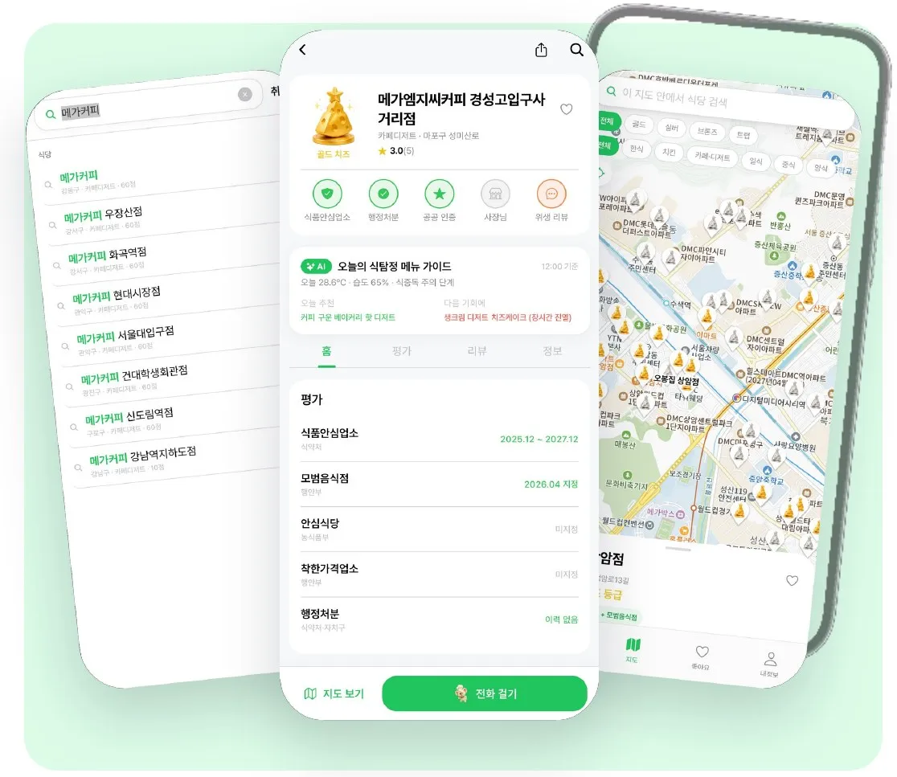
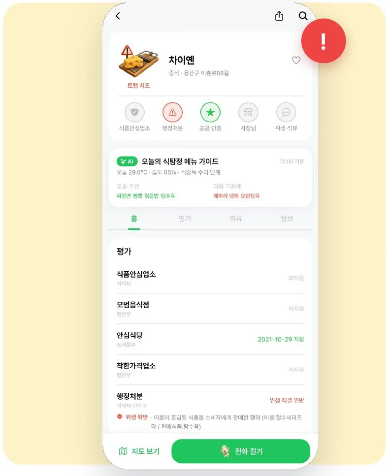
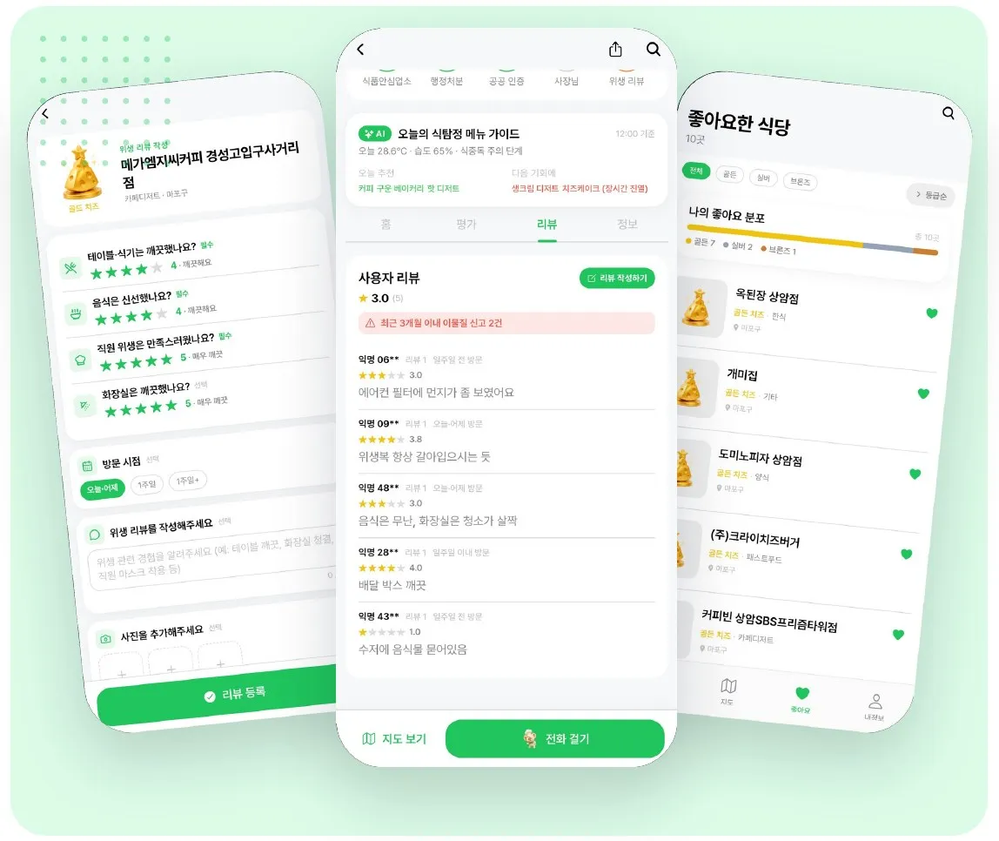
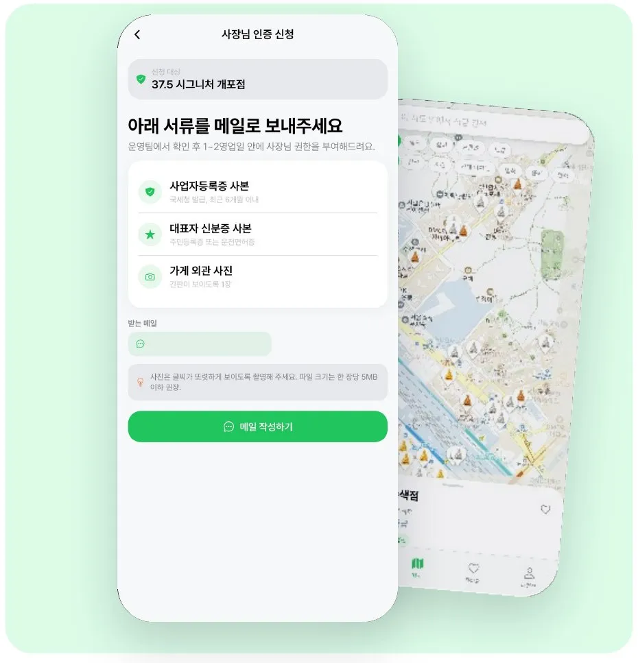
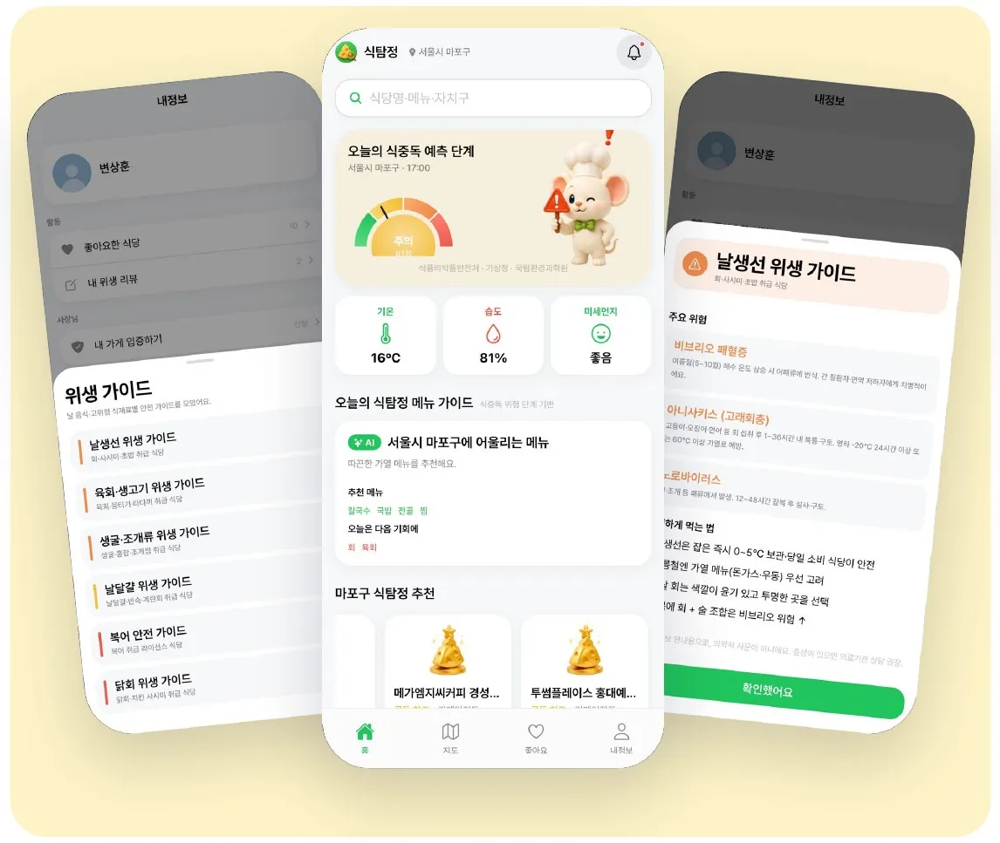
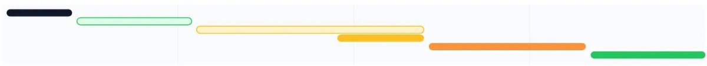

Food Detector
식탐정, 식당 위생 점수 웹앱
Restaurant Hygiene Score Service, Cheese Grades from Public Data
공공데이터로 서울 식당 151,592곳에 위생 점수를 매기고 네 단계 치즈 등급으로 보여 주는 웹앱이다.

점수는 공공데이터 70점, 사장님 청소 기록 15점, 사용자 위생 별점 15점을 더한 100점 만점이다. AI가 행정처분 원문을 읽어 위반 유형을 나눈다.
5개 기관 데이터셋 37종과 카카오 지도 SDK를 합쳐 식당 목록을 만들었다. 등급 분포는 골드 2.6%, 실버 24.1%, 브론즈 73.3%, 트랩 23곳이다.
Trap Cheese

Reviews and Owners


Real-Time Food Poisoning Alert

Development Process
